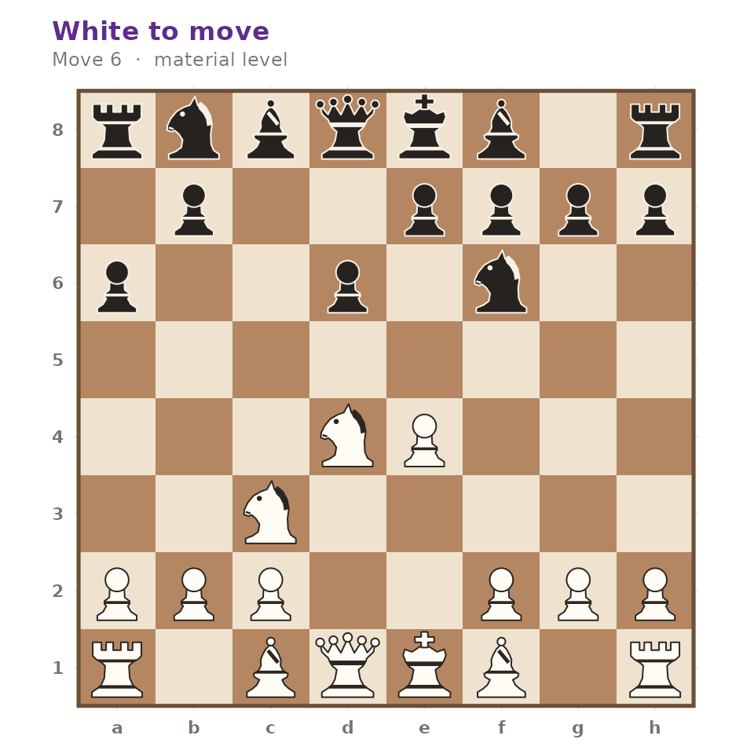

gambitR ships a compact ECO opening book. Every line in it was replayed through the package’s own move generator when the book was built, so no unplayable sequence can reach it, and the resulting position is stored alongside the moves.
The book
gm_openings() with no arguments returns the whole
book.
book <- gm_openings()
nrow(book)
#> [1] 180
head(book[, c("eco", "name", "moves")])
#> # A tibble: 6 × 3
#> eco name moves
#> <chr> <chr> <chr>
#> 1 A00 Amar Opening Nh3
#> 2 A00 Anderssen's Opening a3
#> 3 A00 Barnes Opening f3
#> 4 A00 Clemenz Opening h3
#> 5 A00 Grob Opening g4
#> 6 A00 Hungarian Opening g3Each row carries the ECO code, the opening name, the moves in standard algebraic notation and the FEN of the resulting position.
Searching by name
query is a case-insensitive regular expression matched
against the opening name.
gm_openings("Ruy Lopez")[, c("eco", "name")]
#> # A tibble: 10 × 2
#> eco name
#> <chr> <chr>
#> 1 C60 Ruy Lopez
#> 2 C62 Ruy Lopez, Old Steinitz Defense
#> 3 C64 Ruy Lopez, Classical Variation
#> 4 C65 Ruy Lopez, Berlin Defense
#> 5 C68 Ruy Lopez, Exchange Variation
#> 6 C70 Ruy Lopez, Morphy Defense
#> 7 C77 Ruy Lopez, Morphy Defense, Anderssen Variation
#> 8 C84 Ruy Lopez, Closed Variation
#> 9 C88 Ruy Lopez, Closed, Anti-Marshall
#> 10 C89 Ruy Lopez, Marshall AttackBecause it is a regular expression, alternation works too.
gm_openings("Gambit")[, c("eco", "name")]
#> # A tibble: 21 × 2
#> eco name
#> <chr> <chr>
#> 1 A40 Englund Gambit
#> 2 A51 Budapest Gambit
#> 3 A57 Benko Gambit
#> 4 A82 Dutch Defense, Staunton Gambit
#> 5 B21 Sicilian Defense, Smith-Morra Gambit
#> 6 C30 King's Gambit
#> 7 C33 King's Gambit Accepted
#> 8 C34 King's Gambit Accepted, King's Knight Gambit
#> 9 C51 Evans Gambit
#> 10 D06 Queen's Gambit
#> # ℹ 11 more rowsSearching by code
eco is matched as a prefix, so a partial code selects a
whole range.
gm_openings(eco = "C5")[, c("eco", "name")]
#> # A tibble: 6 × 2
#> eco name
#> <chr> <chr>
#> 1 C50 Italian Game
#> 2 C50 Italian Game, Giuoco Piano
#> 3 C51 Evans Gambit
#> 4 C53 Italian Game, Classical Variation
#> 5 C55 Italian Game, Two Knights Defense
#> 6 C57 Italian Game, Two Knights, Fried Liver AttackThe two filters combine.
gm_openings("Defense", eco = "E")[, c("eco", "name")]
#> # A tibble: 17 × 2
#> eco name
#> <chr> <chr>
#> 1 E00 Indian Game, East Indian Defense
#> 2 E04 Catalan Opening, Open Defense
#> 3 E11 Bogo-Indian Defense
#> 4 E12 Queen's Indian Defense
#> 5 E15 Queen's Indian Defense, Fianchetto Variation
#> 6 E20 Nimzo-Indian Defense
#> 7 E21 Nimzo-Indian Defense, Three Knights Variation
#> 8 E32 Nimzo-Indian Defense, Classical Variation
#> 9 E40 Nimzo-Indian Defense, Rubinstein Variation
#> 10 E60 King's Indian Defense
#> 11 E61 King's Indian Defense, Normal Variation
#> 12 E62 King's Indian Defense, Fianchetto Variation
#> 13 E70 King's Indian Defense, Normal Variation, King's Knight
#> 14 E73 King's Indian Defense, Averbakh Variation
#> 15 E80 King's Indian Defense, Samisch Variation
#> 16 E90 King's Indian Defense, Classical Variation
#> 17 E97 King's Indian Defense, Mar del PlataNothing ever returns NULL: a query that matches nothing
gives a zero-row tibble with the same columns.
gm_openings("Klingon Gambit")
#> # A tibble: 0 × 4
#> # ℹ 4 variables: eco <chr>, name <chr>, moves <chr>, fen <chr>Walking a line onto the board
The moves column replays directly.
line <- gm_openings("Sicilian Defense, Najdorf Variation")
line$name
#> [1] "Sicilian Defense, Najdorf Variation"
position <- gm_position()
for (san in strsplit(line$moves[[1]], " ")[[1]]) {
position <- gm_move(position, san)
}
identical(gm_write_fen(position), line$fen[[1]])
#> [1] TRUE
gm_plot_board(position)
Identifying the opening of a game
gm_identify_opening() walks a game against the book and
reports the deepest line the game follows, together with the ply at
which the book ran out.
game <- gm_read_pgn(
"1. e4 c5 2. Nf3 d6 3. d4 cxd4 4. Nxd4 Nf6 5. Nc3 a6 6. Be3 e5 7. Nb3 Be6 *",
text = TRUE
)
gm_identify_opening(game)
#> # A tibble: 1 × 3
#> eco name book_depth
#> <chr> <chr> <int>
#> 1 B90 Sicilian Defense, Najdorf Variation 10Comparison ignores check, mate and annotation marks, so notation from different sources still lines up.
gm_identify_opening(gm_read_pgn("1. e4 c5 2. Nf3 d6 3. Bb5+ Bd7 *", text = TRUE))
#> # A tibble: 1 × 3
#> eco name book_depth
#> <chr> <chr> <int>
#> 1 B51 Sicilian Defense, Moscow Variation 5A game that leaves the book immediately returns zero rows rather than a misleading match.
gm_identify_opening(gm_read_pgn("1. a3 h6 2. a4 h5 *", text = TRUE))
#> # A tibble: 1 × 3
#> eco name book_depth
#> <chr> <chr> <int>
#> 1 A00 Anderssen's Opening 1Where the data comes from
The book lives in inst/extdata/eco.rds and is generated
by data-raw/eco.R. The generator holds the ECO codes, names
and move sequences as literal text, replays each one, and fails loudly
on any line that cannot be played, so a typo becomes a build error
rather than a silently wrong row. The Openings tab of
gm_run_app() is a front end to exactly these functions.